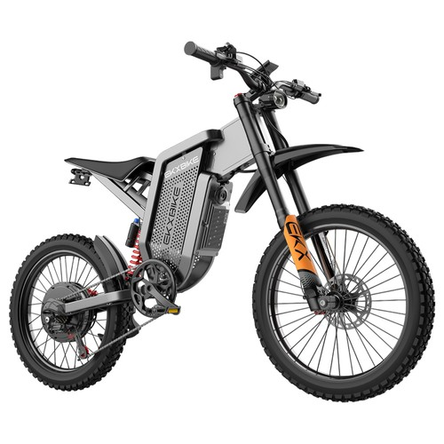
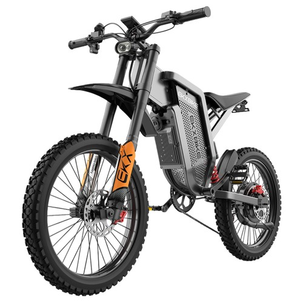
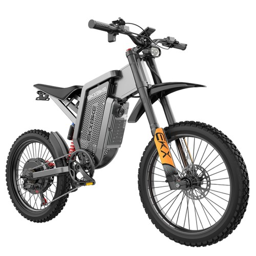
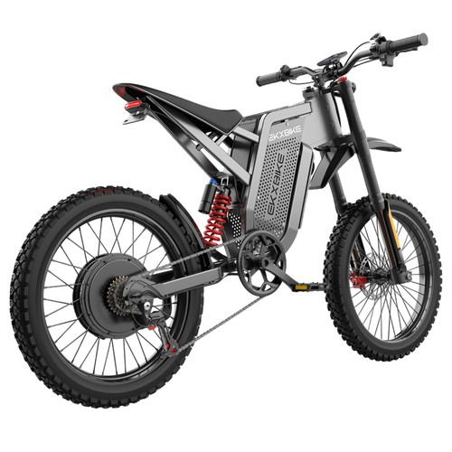

Check specs and official prices:
More Details & Buying Options3000W Motor & 60V 30AH Battery The EKXBIKE X21 Max off-road electric bike is driven by a 3000W brushless high-speed motor, with a maximum speed of 75km/h. The 60V 30Ah removable battery can be fully charged in 8-10 hours, with a range of up to 90km.

Hydraulic Adjustable Shock Absorber The EKXBIKE X21 Max adult electric bike is equipped with hydraulic adjustable shock absorbers, which can effectively reduce the impact of uneven terrain and provide a smooth and comfortable riding experience even on the most challenging terrain.

Hydraulic Brakes The EKXBIKE X21 Max electric bike is equipped with front and rear hydraulic brakes, which provide precise braking force during riding, ensure fast and controllable deceleration, and protect your safety in all directions.
